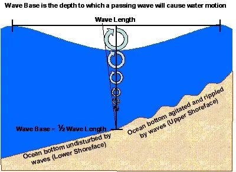
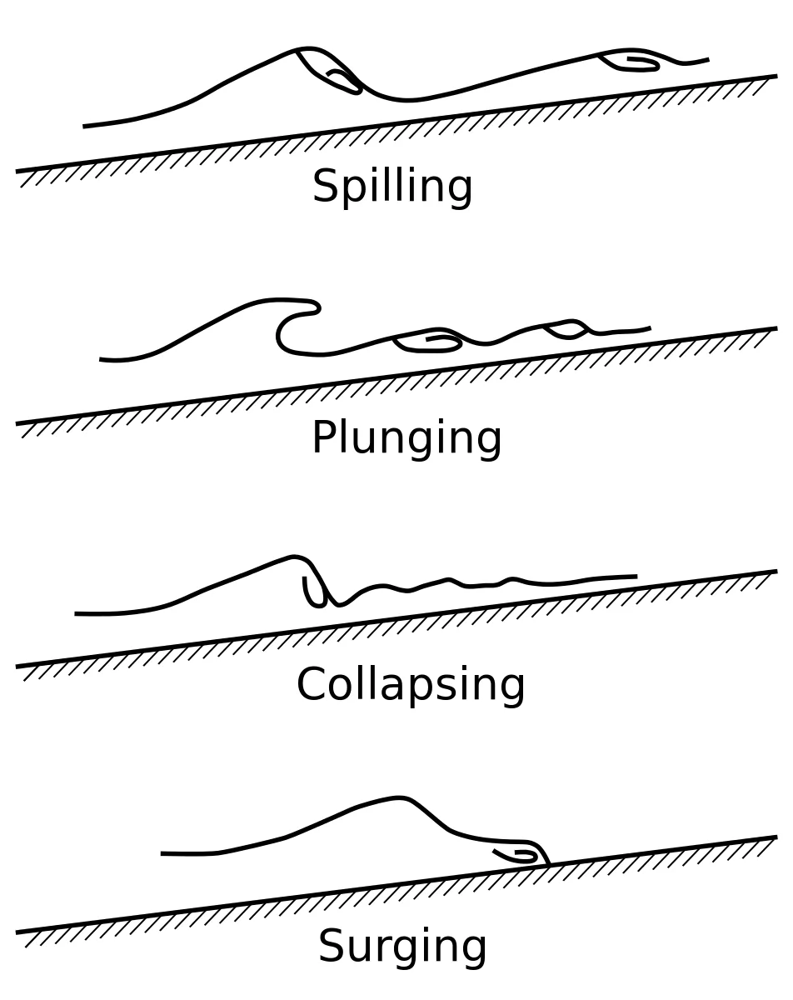
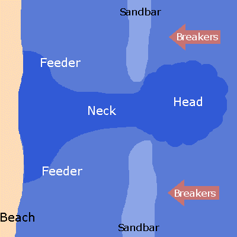
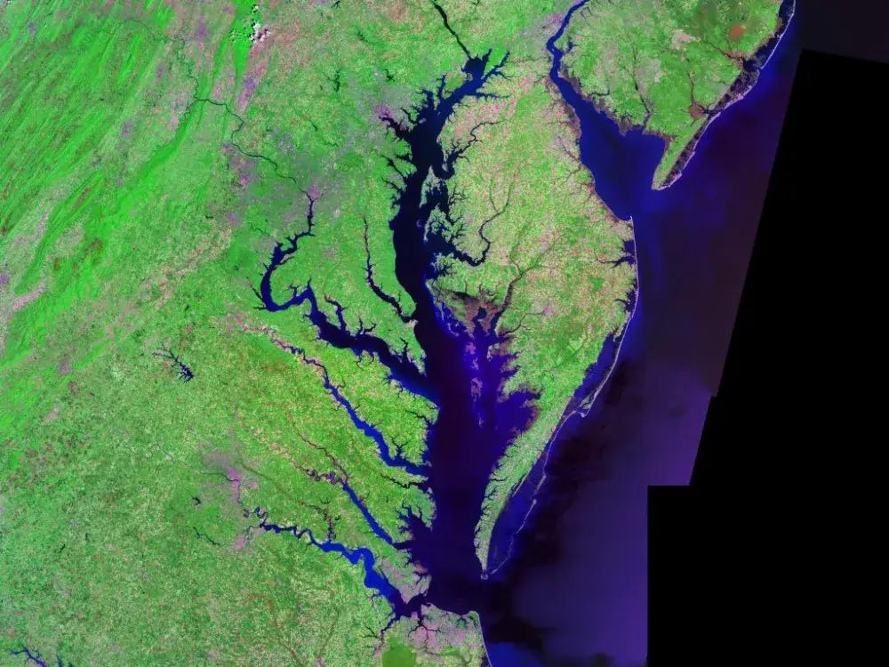
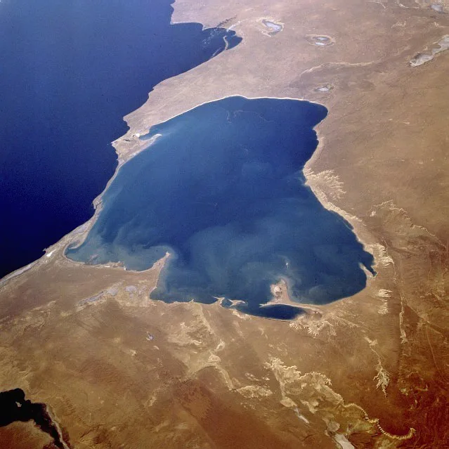
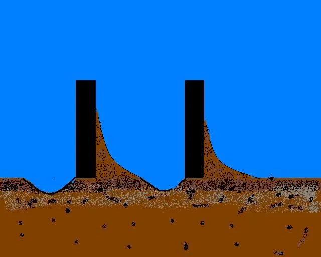
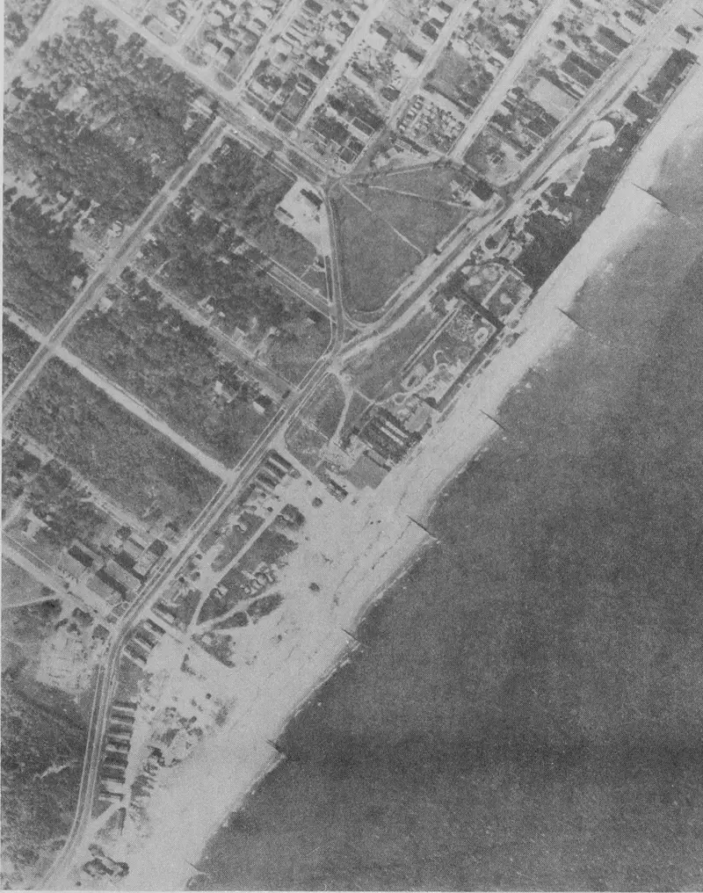
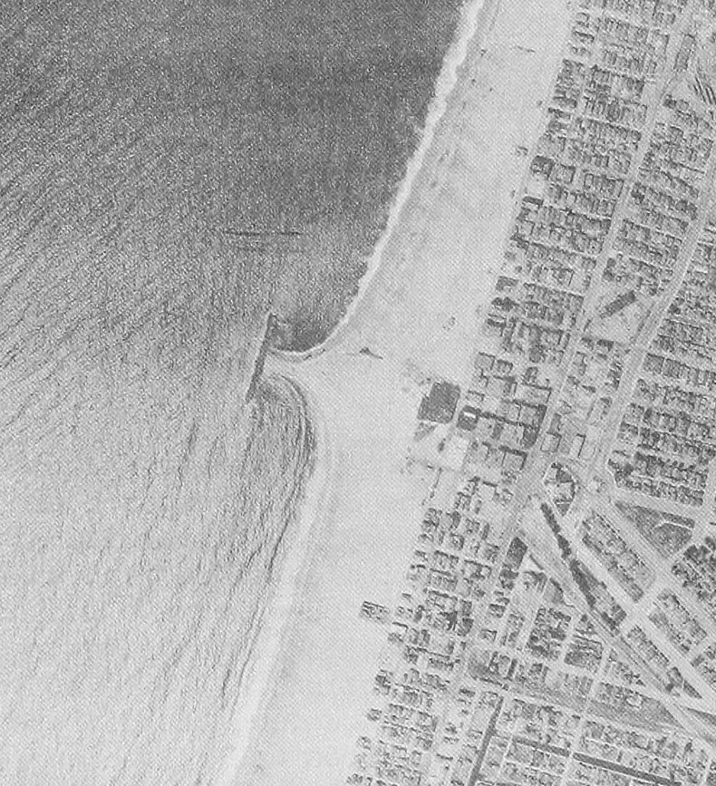
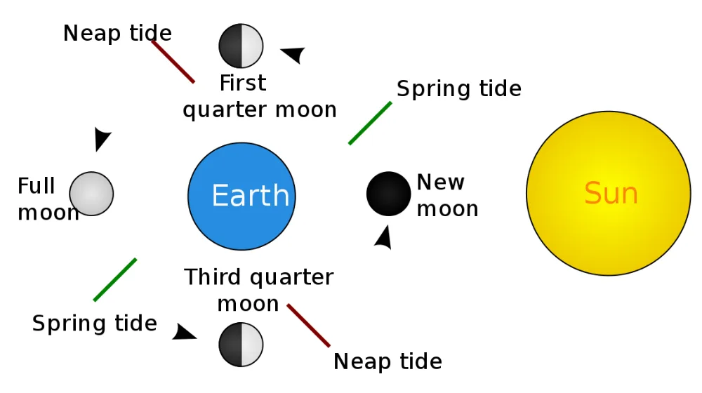
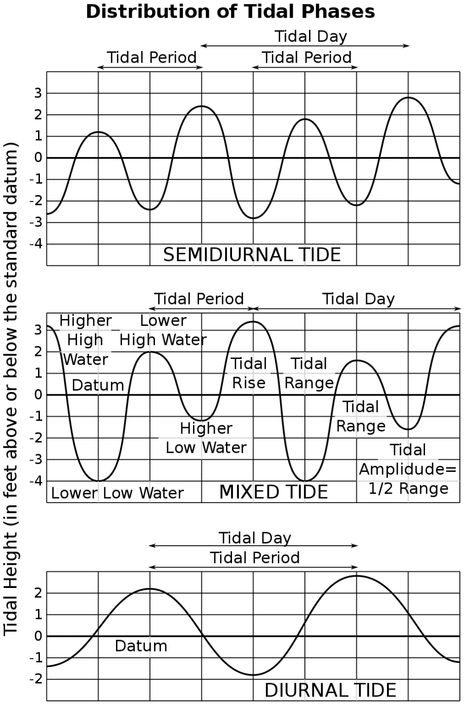

Learning outcomes
By the end of Chapter 12 you should be able to do each of these. The tag shows where it is covered.
- 12.1Describe how waves occur, move, and carry energy.
- 12.1.1Explain wave behavior approaching the shoreline.
- 12.2.1Describe shoreline features and zones.
- 12.2.2Describe wave refraction and its contribution to longshore currents and longshore drift.
- 12.2.2Explain how longshore currents cause the formation of spits and baymouth bars.
- 12.2.3Distinguish between submergent and emergent coasts and describe the coastal features of each.
- 12.2.4Describe the relationship between the natural river of sand in the littoral zone and human attempts to alter it.
- 12.3Describe the pattern of the main ocean currents and explain the factors behind surface and deep currents.
- 12.3.3Explain how tides occur and distinguish among diurnal, semidiurnal, and mixed tide patterns.
How to use this guide
Underlined words are key terms. Click one, or open Key terms at the bottom right, to read and search every definition from this chapter. The chapter follows energy from the wind to the beach: wind makes waves (12.1), waves shape the shore and move a "river of sand" along it, which people try to control (12.2), and currents and tides move the whole ocean (12.3).

Earth's surface is 29% land and 71% water. are the interfaces between the two, and so they are the longest visible boundaries on Earth. To understand what happens at these boundaries, start with wave energy.
12.1Waves and wave processes
Wind blowing over water transfers energy to it by friction, and this energy forms waves. A wave is not water travelling across the ocean: each water particle oscillates in a circle. As the wave crest passes, the water moves forward; as the trough passes, it moves backward. A floating cork shows this: it bobs up, forward, down, and back, but stays in about the same place (Figure 12.2).
The parts of a wave (Table 12.1, Figure 12.3):
| Term | Meaning |
|---|---|
| Highest point of the wave. | |
| Lowest point of the wave. | |
| Vertical distance from trough to crest; set by wave energy. | |
| Half the wave height: crest (or trough) to the still water line. | |
| Horizontal distance between consecutive crests. | |
| Speed at which a crest moves forward; related to wave energy. | |
| Time for adjacent crests to pass a given point. |

The circular motion of water particles weakens with depth and is negligible at about one-half wavelength. That depth is the : below it, water is not disturbed by waves. In water shallower than wave base, waves disturb the bottom and ripple the sand. If waves reach a beach with crests about 6 m (~20 ft) apart, they stir the water to about 3 m (~10 ft) deep; this is the . In strong storms such as hurricanes, wavelength and wave base increase dramatically, to a of about 91 m (~300 ft) (Figure 12.4).

The energy a wave receives depends on the wind velocity and on the distance the wind blows across the water, the . Waves striking a shore were usually made by storms hundreds of miles away and have travelled for days. Wind blowing in a fairly constant direction makes a : a group of roughly parallel waves moving together. One fetch can produce many wavelengths, and longer waves travel faster, so they reach a distant shore first. This sorting by wavelength during travel is (Figure 12.5).

12.1.1 Behavior of waves approaching shore
On the open sea, wave trains from many directions cross and interact, so the surface looks choppy. This is (Figure 12.6):
- : crests align with crests. The combined height is the sum of the individual heights (); troughs aligned with troughs make deeper hollows.
- : crests align with troughs and cancel each other out.
When waves reach water about one-half wavelength deep or less, they begin to touch the seafloor, and friction slows them. The energy they carry stays the same, so the waves build higher. Each orbit is fed by water from the trough in front of the wave; in shallow water there is not enough water in that trough to complete the circle, so the crest pours over and forms a (Figure 12.7). The chapter's figure shows four types of breakers (Figure 12.8).

Four breaker types
The chapter names these only in its figure. Short descriptions (Wikipedia, "Breaking wave"):
- Spilling: on a gentle slope, the crest becomes unstable and white water spills down the wave face.
- Plunging: on a steeper bottom or sudden shallowing, the crest curls over and plunges ahead.
- Collapsing: between plunging and surging; the lower face steepens and collapses.
- Surging: on a very steep beach, the wave surges up the shore with little breaking.
A , sometimes wrongly called a "tidal wave", is set off by an energetic event on the seafloor: an earthquake, a submarine landslide, or a volcanic eruption (Units 9 and 4). In an earthquake, crustal rock below the sea can abruptly lift part of the seafloor. The water above is suddenly raised into a bulge, and a wave train spreads out in all directions at tremendous speed, over 322 km/h (200 mph), carrying enormous energy (Figure 12.9).
- In the open ocean a tsunami may pass unnoticed: it moves very fast, its wavelength is very long, and its height is very low.
- Near shore the waves touch the shallow seafloor, friction slows them, and with the same energy their height builds. A wave can hit the shore as a wall of water over 30 m (~100 ft) high. This massive wave, the , may sweep inland well beyond the beach and destroy structures far inland.
The warning sign: the sea draws back
The trough in front of a tsunami arrives first and draws the water back, exposing the seafloor. Curious people may walk out to see the stranded sea life and then be overwhelmed when the breaking crest hits. If the sea suddenly retreats, move to high ground.
Check yourself: Section 12.1 quiz in the textbook ↗
12.2Shoreline features
Coastlines are dynamic, high-energy, geologically complicated places with many erosional and depositional features (Unit 5). A coastline includes every part of the land–sea boundary directly affected by the sea, from land far above high tide to seafloor well below normal wave base. The itself is the direct interface between water and land, and it shifts with the tides; this shifting interface is the . Waves, currents, climate, coastal shape (morphology), and gravity all act on this boundary to create shoreline features.
12.2.1 Shoreline zones
Shorelines are divided into five primary zones (Figure 12.10, Table 12.2):
- : below water but still geologically active, because cascade over the continental slope and pile up on the continental rise.
- : the area affected by waves, where the water is one-half wavelength deep or less. Its width depends on the longest wavelength of the incoming wave train and on the slope of the seafloor. It includes the , where sand is disturbed and deposited:
- Upper shoreface: worked by everyday waves; finely laminated and cross-bedded sand.
- Lower shoreface: moved only by storm waves; hummocky cross-stratified sand (Unit 5).
- : where the waves break.
- : overlaps the surf zone and is wet and dry in turn with waves and tides; well-sorted, planar-laminated sand. Its is where breaking waves rush up as and flow back down as .
- : always above sea level in normal conditions. Onshore winds may blow sand behind the beach and berms to build .
are low ridges above the beach face. In North America, the summer beach where people spread their towels is the : summer wave energy is usually lower, so sand piles onto the beach. Behind it is a low sand ridge, the . In winter, higher storm energy moves the summer-berm sand off the beach and piles it in the nearshore zone; the next year the sand returns to the summer berm.
| Zone | Where | What happens / sediment |
|---|---|---|
| Offshore | Beyond the nearshore, below water | Turbidity currents flow down the continental slope to the continental rise |
| Nearshore | Depth ≤ ½ wavelength | Shoreface: laminated and cross-bedded sand (upper), hummocky cross-stratified sand (lower) |
| Surf | Inside the nearshore, near the beach | Waves break |
| Foreshore | Overlaps the surf zone; between tides | Wet and dry; well-sorted, planar-laminated sand; beach face and berms |
| Backshore | Above sea level in normal conditions | Wind-blown sand forms dunes |
12.2.2 Refraction, longshore currents, and longshore drift
Waves usually approach the shore at an angle. When they enter water less than one-half wavelength deep they slow down, and the end of each crest nearest the beach slows first, so the crests bend. This is . From the beach, refracted waves look as if they come straight in, parallel to the beach, but they still arrive at a slight angle (Figure 12.11):
- The swash runs up the beach face at a slight angle, while the backwash flows straight back down under gravity.
- This small difference creates a current along the beach, the .
- Waves stir up sand in the surf zone and move it along the shore: . Along both the west and east coasts of North America, longshore drift moves sand from north to south on average.

Longshore currents carry longshore drift down the coast until it reaches a bay or inlet, where the sand is deposited in quieter water (Unit 11) and a can form. As the spit grows it may extend across the mouth of the bay as a barrier called a (Figure 12.13, Figure 12.14).

Where a bay or inlet is used to anchor boats, spits and baymouth bars are a serious inconvenience, and communities find ways to keep their harbors open (Table 12.3). One way is a , a long concrete or stone barrier that deflects sand away from a harbor mouth or other waterway (Figure 12.15). If the jetty does not push the sand far enough out, the sand keeps flowing along the shore and forms a spit around the end of the jetty.
| Method | How it works | Cost and effect |
|---|---|---|
| Jetty | Barrier deflects sand away from the harbor mouth | Sand may still flow around its end and form a spit |
| Sand dug from the growing spit, carried by barge, and returned to the drift downstream of the harbor | More expensive, more effective | |
| Pumps and pipes | Sand drawn in upstream of the harbor and pumped to the drift downstream | Even more expensive, even more effective |
Because natural processes never stop, these fixes need ongoing work. Santa Barbara, California, tried several methods before settling on pumps and piping.

are related to longshore currents. Where wave trains push water straight toward the beach face, or where the shape of the nearshore seafloor refracts waves toward one point on the beach, water piles up on shore. It must find a way back to the sea: a relatively narrow outlet, through which the rip current carries water directly away from the beach (Figure 12.16). Swimming straight back against it is fruitless.

Caught in a rip current?
- Don't swim straight back to shore against the current.
- Average swimmers: swim parallel to the beach until out of the current, then return to shore.
- Good swimmers: ride the current out to where it dissipates, swim around it, and return.
- Best: understand rip currents, have a plan before entering the water, and obey posted warning signs.
NOAA gives the same advice: swim parallel to shore, then back at an angle.
Like a rip current, moves water away from the shore, but it flows underneath the approaching waves and is strongest in the surf zone, where waves are high and water is shallow. It is another return flow for water carried onshore by waves.
12.2.3 Emergent and submergent coasts
Tectonic shifts and changes in sea level cause the long-term rise and fall of sea level relative to the land (Table 12.4). An forms where sea level falls relative to the land; a forms where sea level rises relative to the land.
| Emergent coast | Submergent coast | |
|---|---|---|
| Sea level relative to land | Falls | Rises |
| Causes | Tectonic uplift, sea-level fall | Tectonic (the crust sinks), glacier melt |
| Main process | Waves, wind, and gravity erode the coast | Rising water floods the land |
| Features | High cliffs, headlands, exposed bedrock, steep slopes, rocky shores, arches, stacks, tombolos, wave-cut platforms, wave notches | Flooded river mouths, fjords, barrier islands, lagoons, estuaries, bays, tidal flats, tidal currents |
Emergent coasts
On emergent coasts, wave energy, wind, and gravity erode the coastline, and the erosional features are raised relative to the wave zone (Figure 12.17):
- persist because waves cut away their base and higher rock falls off by mass wasting (Unit 10).
- Refracted waves attack bedrock at the base of and may carve a , which can extend below sea level as a . When an arch collapses it leaves one or more rock columns, .
- A stack or nearshore island makes a quiet-water zone behind it. Sand in the longshore drift collects there and forms a , a sand strip joining the island or stack to the shore (Figure 12.18).
- Where sand supply is low, waves may erode a across the surf zone: a bench-like terrace of bare rock, with tidal pools at low tide, that extends to the cliff base.
- Where waves cut into the base of a sea cliff they make a (Figure 12.19).


Submergent coasts
Submergent coasts form where sea level rises relative to the land, through tectonic subsidence or sea-level rise from melting glaciers.
- Flooded river mouths: rising water drowns river valleys, as at Chesapeake Bay (Figure 12.20).
- : glacial valleys flooded by sea-level rise after the last ice age (Unit 14).
- : elongated bodies of sand, formed from old beach sands, that parallel the shoreline, often with lagoons behind them. Their origin is debated: some scientists think they formed as ice sheets melted after the last ice age and raised sea level; another hypothesis is that they grew from spits and bars built far offshore.

, or mudflats, form where tides alternately flood and expose low areas along the coast (Figure 12.21). Tidal currents make combinations of symmetrical and asymmetrical ripple marks, and drying mud makes mud cracks. Geologists divide tidal flats into three zones, any of which may be absent on a given flat (Table 12.5).

| Zone | Conditions | Sediment and structures |
|---|---|---|
| Strong flowing water | Coarser sediment; ripple marks and cross-bedding common | |
| Vegetated | Sand and mud | |
| (salt flat) | Submerged least often | Finest grained: silt; mud cracks |
Uniformitarianism in Utah
In the central Wasatch Mountains, ancient tidal-flat deposits are exposed in the Precambrian Big Cottonwood Formation. Their sedimentary structures match those of modern tidal flats, so they formed in a similar setting: Hutton's principle of uniformitarianism (Unit 1). Shorelines, tides, and shoreline processes existed then too, but there were no land plants to hold weathered sediment in place (Unit 5), so erosion rates would have been different.
are bodies of water partly cut off from the ocean by spits, barrier islands, or similar features (Figure 12.22). are a vegetated type of lagoon where fresh water flows in and makes the water , with a salinity between salt and fresh water. The terms lagoon, estuary, and even bay are often used loosely for one another. Lagoons and estuaries are transitional between land and water: littoral (shallow shoreline), lacustrine (lake or lagoon), and fluvial (river) settings overlap there (Unit 5).

12.2.4 Human impact on coastal beaches
People affect beaches when they build homes, condominiums, hotels, businesses, and harbors, and again when they try to manage the natural erosion that follows. Waves, currents, longshore drift, and dams on rivers remove sand from expensive beachfront property and expose once-calm harbors to high wave energy. To protect their investment, keep sand on their beach, and keep harbors calm, cities and landowners build jetties, groins, dams, and breakwaters (Figure 12.23, Table 12.6).
| Structure or method | What it is | Purpose | Side effect |
|---|---|---|---|
| Jetty | Large pile of boulders or concrete barrier at a river mouth or harbor | Divert current or tide, keep a channel open, shelter a harbor or beach from waves | Sand builds up on one side and is lost on the other |
| Smaller fence of wire, wood, or concrete built across the beach, perpendicular to shore | Keep sand on a beach (not divert it) | Erosion downstream; each groin creates the need for another, giving a scalloped shore | |
| Offshore structure that waves break against | Calm water for harbors and moorings | Stops waves and drift from reaching the beach; a tombolo fills in behind it | |
| Sand hauled in by truck or barge and dumped on the beach | Replace sand trapped by dams upstream | Can disrupt shoreline ecosystems and bring in foreign objects |
Groins collect sand on their upstream side and lose it on their downstream side, so every groin on one property makes the neighbor downstream need one too. A series of groins gives the shoreline a scalloped look (Figure 12.24, Figure 12.25).


Rivers and streams carry sand to the coast, where the longshore current spreads it along the beaches. Dams trap that sand and keep it from reaching the beaches. In beach replenishment, sand is hauled in from elsewhere by truck or barge. This can disrupt the shoreline ecosystem, by exposing native creatures to foreign ecosystems and microorganisms, and can bring foreign objects: visitors to one replenished East Coast beach found munitions and metal shards that had been dredged from abandoned military test ranges.
A breakwater protects harbors and moorings by making waves break offshore, leaving calmer water behind it. But it keeps waves from reaching the beach and stops sand moving with longshore drift. The drift drops its sand in the quiet water, the shoreline builds out, and a tombolo forms behind the breakwater and eventually fills the space. At Venice, California, a breakwater built for a quiet-water harbor gained a tombolo that now acts as a large groin in the beach drift (Figure 12.26).

12.2.5 Submarine canyons
are narrow, deep underwater canyons on the continental shelf, typically at the mouths of large river systems on land (Figure 12.27). They form when:
- rivers cut down into the continental shelf during times of low sea level, and
- material keeps slumping or flowing down from the mouth of a river or a delta.
Sediment-rich currents, denser than seawater, flow down the canyons, can erode and deepen them, and drain onto the ocean floor. are underwater landslides released down the continental slope from steep delta faces and underwater sediment flows. They keep eroding the canyon, and fan-shaped deposits build up at its mouth on the continental rise (Unit 5).

Check yourself: Section 12.2 quiz in the textbook ↗
12.3Currents and tides
Ocean water moves as waves, currents, and tides. Ocean currents are driven by persistent global winds blowing over the surface and by differences in water density. They are part of Earth's heat engine: ocean water absorbs solar energy and currents distribute it. Water also has a high , the heat needed to raise a unit amount of a substance by one degree: about one calorie per cubic centimeter (one gram) of water per °C. So the oceans, covering 71% of Earth's surface, soak up solar heat with little change in temperature and carry that heat around the planet.
12.3.1 Surface currents
Earth's rotation and the strongly influence ocean currents (Unit 13). The world map (Figure 12.28) shows large circular currents in the northern and southern Atlantic, Pacific, and Indian Oceans. These are driven by atmospheric circulation and, because of the Coriolis effect, rotate clockwise in the Northern Hemisphere and counterclockwise in the Southern Hemisphere (Figure 12.29).

| Western boundary currents | Currents returning cold water | |
|---|---|---|
| Water | Warm | Cold |
| Direction | From the equator toward the poles | Toward the equator |
| Shape | Narrow | Broad and diffuse |
| Where | West side of the ocean, along the east coasts of continents | East side of the ocean, along the west coasts of continents |
| Examples | Gulf Stream, Kuroshio (north); Brazil, Mozambique, East Australian (south) | Humboldt (Peru) Current |
| Effect on nearby land | Warmer: the Gulf Stream makes northern Europe much milder than northeastern Canada and Greenland at the same latitudes | Cooler and drier: cold water limits evaporation, one reason the Atacama Desert of Chile is cool and arid |
are key contributors to local climate (Table 12.7). Warm western boundary currents and cold eastern boundary currents make nearby lands warmer or colder than other places at the same latitude.
12.3.2 Deep currents
Whether an ocean current moves horizontally or vertically depends on its density, and the density of seawater is set by temperature and salinity. Evaporation and freshwater from rivers change salinity and therefore density. Deep-water movement driven this way is : thermo for temperature, haline for salinity. It connects the world's deep ocean waters. The Gulf Stream shows how it begins:
- The warm Gulf Stream flows poleward; its heat promotes evaporation, which takes heat from the water, so the water cools.
- Evaporation, and ice formation at high latitudes, leave the water saltier.
- The colder, saltier, denser water reaches the North Atlantic near Greenland and sinks to become a deep-water current.
- Deep currents link up worldwide and return to the surface, overturning and mixing the whole ocean and bringing nutrients to marine life (Figure 12.30).
This worldwide connection between shallow and deep circulation is sometimes called the .

12.3.3 Tides
are the daily rise and fall of sea level, caused by the gravity of the Sun and Moon acting on the oceans. Earth rotates each day within the Moon's and Sun's gravity fields. The Sun is much larger and its pull more powerful, but the Moon is much closer, so the Moon's influence on tides is dominant. The difference between high and low tide, the , depends mainly on how the Moon and Sun line up with Earth (Figure 12.31):
- : Sun, Moon, and Earth line up, at full or new Moon; tidal range is at its maximum.
- : the Moon and Sun are at right angles relative to Earth, at the quarter Moons, about a week after a spring tide; tidal range is at its lowest.

Earth rotates within a "tidal envelope", so the tide rises and ebbs every day. Tides are measured at coastal stations, and NOAA publishes the measurements and predictions. There are three tidal patterns (Table 12.8, Figure 12.32). They are timed by the , the time for the Moon to line up again with a point on the rotating Earth: slightly longer than 24 hours, about 24 hours 50 minutes (Figure 12.33).
| Pattern | Cycles per tidal day | Notes |
|---|---|---|
| 1 | One high and one low tide each tidal day | |
| 2 | Each cycle about 12 h 25 min; the range typically varies from cycle to cycle | |
| 2 | Highs and lows of unequal size that vary through the month: e.g. a higher high, a lower high, a higher low, and a lower low |



Forecasting the tidal pattern and the arrival times of tidal phases at a given place is complicated and can be done for only a few days at a time. The timing depends on , the depth of the ocean basins, and on the continents that stand in the way of the tidal envelope. Local tidal experts make 48-hour forecasts from tidal charts based on daily observations.
A typical tidal range is about 1 m (3 ft). Extreme ranges occur where the tide enters a narrow zone that funnels its energy (Figure 12.35):
- English Channel, between Great Britain and mainland Europe: 7 to 9.75 m (23 to 32 ft).
- Bay of Fundy, the funnel-shaped bay between Nova Scotia and New Brunswick, Canada: the highest tidal ranges on Earth, nearly 12 m (40 ft) on average and around 18 m (60 ft) at the extreme, according to the chapter (see the fact-check notes).
Flood tide on a wide flat
Where tidal ranges are extreme, someone who walks out on seafloor exposed at ebb tide may not be able to outrun the water when the flood tide comes in.
Check yourself: Section 12.3 quiz in the textbook ↗
Summary
Waves, currents, and tides are the main agents that shape shorelines, and most coastal landforms come from sand moved by longshore drift and from the long-term rise or fall of sea level. The shoreline, the interface between water and land, is divided into five zones, and processes there are littoral processes. Waves approach the beach at an angle and bend toward it (wave refraction), which creates the longshore current and longshore drift that move sand along the coast. Where the current drops sand in quieter water it builds spits and baymouth bars, which often block bays and harbors; people build jetties and groins to keep harbors open and keep sand on beaches, and these interfere with natural beach processes. Falling sea level creates emergent coasts and rising sea level submergent coasts. The oceans absorb solar energy, which currents distribute: surface gyres turn clockwise in the Northern Hemisphere and counterclockwise in the Southern, and thermohaline circulation links shallow and deep water in the global conveyor belt. Tides, caused by the Moon and Sun, follow diurnal, semidiurnal, or mixed patterns, with ranges from about 1 m to the extremes of the Bay of Fundy.
Quick recap
- Water particles move in circles; motion dies out at wave base ≈ ½ wavelength (fair-weather vs. storm wave base).
- Wave energy depends on wind speed and fetch; longer waves travel faster (dispersion).
- In shallow water waves slow, shorten, grow taller, and break; tsunamis do the same on a huge scale.
- Zones, sea to land: offshore → nearshore (shoreface) → surf → foreshore (beach face, berms) → backshore (dunes).
- Refraction → swash at an angle + backwash straight down → longshore current and longshore drift → spits and baymouth bars.
- Jetties, groins, and breakwaters trap sand upstream and starve beaches downstream; breakwaters grow tombolos.
- Emergent (sea level falls): cliffs, arches, stacks, platforms, notches. Submergent (sea level rises): drowned river mouths, fjords, barrier islands, lagoons, tidal flats.
- Gyres: clockwise (N), counterclockwise (S); warm narrow western boundary currents, cold broad currents on the other side.
- Thermohaline: cold, salty, dense water sinks near Greenland and drives the global conveyor belt.
- Spring tides at new and full Moon; neap tides at quarter Moons. Diurnal = 1 cycle, semidiurnal = 2, mixed = 2 unequal per tidal day (24 h 50 min).
Check yourself: Chapter 12 review quiz in the textbook ↗
Resources
Fact-check notes
Each fact in this guide comes from Chapter 12. These notes flag places where the chapter simplifies, has a slip, or differs from other reliable sources. Where the chapter is wrong, the guide's main text uses the corrected value and the chapter's wording is recorded here.
| Chapter says | Check |
|---|---|
| Neap tide occurs "approximately two weeks later" than spring tide. | Corrected in this guide. Neap tides come about seven days after a spring tide, at the quarter Moons; spring tides come twice a month, about two weeks apart (NOAA, "What are spring and neap tides?"). The chapter's own figure shows neaps at the quarter Moons. |
| Semidiurnal tides have two cycles per tidal day, "approximately 12 hours and 50 minutes". | Corrected in this guide. The tidal (lunar) day is 24 h 50 min, so each semidiurnal cycle is about 12 h 25 min (NOAA tides tutorial, "The lunar day"). |
| Bay of Fundy: average range nearly 12 m (40 ft), extreme around 18 m (60 ft). | Kept in the main text as the chapter's values. Other sources give larger averages: Wikipedia ("Bay of Fundy") gives a range of about 16 m (52 ft) at the head of the bay. NOAA names the bay, at Burntcoat Head, Nova Scotia, as the site of the world's highest tides without a figure. Ranges vary along the bay. |
| Tsunamis travel "over 322 kph (200 mph)". | True but understated: in the deep ocean tsunamis can travel about as fast as jet planes (NOAA, "What is a tsunami?"), several hundred km/h. |
| Water's specific heat: one calorie "per cubic centimeter" per °C. | Specific heat is defined per unit mass: 1 calorie per gram per °C. One cubic centimeter of water has a mass of about one gram, so the number is the same. |
| "Water is densest just above its freezing point." | True for fresh water, densest near 4 °C. Seawater of normal salinity keeps getting denser as it cools all the way to its freezing point (about −1.9 °C), which is why cold polar seawater sinks. |
| The chapter's text never names the four breaker types; its figure does. | Descriptions in the callout beside Figure 12.8 come from Wikipedia, "Breaking wave". |
| "Planer-laminated" sand; "The tombolo eventually fill in". | Typos: planar-laminated; the tombolo eventually fills in. |
| Longshore drift moves sand north to south on average along both coasts of North America. | A generalization. Drift direction depends on the prevailing wave approach and reverses locally and seasonally. |
Credits
Content summarized from An Introduction to Geology, Chapter 12, © 2017 Chris Johnson, Matthew D. Affolter, Paul Inkenbrandt, and Cam Mosher, licensed CC BY-NC-SA 4.0. Every photo and drawing taken from the chapter is credited in its caption, with the license given in the chapter's media attributions.
- Drawn for this guide from the chapter's descriptions: wave orbits (after Kraaiennest's animation), wave interference, shoaling and breaking, tsunami (after Régis Lachaume's animation), shoreline zones with the summer/winter beach (after the U.S. Navy "Littoral Zones" figure), longshore drift, spit and baymouth bar, coastal structures, emergent-coast features, gyres, and tidal ranges.
- Outside sources are named where they are used: NOAA National Ocean Service (spring and neap tides, the lunar day, rip currents, tsunamis, highest tides) and Wikipedia ("Breaking wave", "Bay of Fundy").